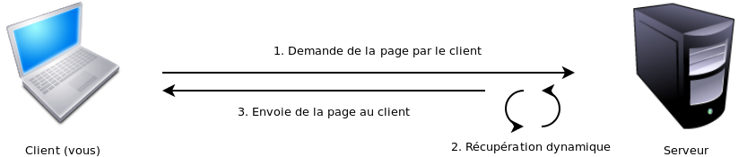

Vous êtes attiré par le développement internet ? Vous ne savez pas comment créer un site internet ? Vous connaissez Python et aimeriez bien développer vos sites avec ? Django ! Bonjour à vous, ami zéro.
Si vous êtes ici par rapport à l'une des questions ci-dessus ou bien par simple curiosité, je peux vous promettre que vous ne le regretterez pas. Qu'allons-nous apprendre ? Le développement web dynamique ou bien, en d'autres termes, créer votre site internet complet. Qu'est-ce que Django ? A quoi sert-il ? ... Toutes les réponses sont dans ce cours. Pour bien le comprendre, vous devez au préalable connaître :
Un site web, c'est avant tout des fichiers (HTML, CSS, javascript, ...) qui sont récupérés puis traités par un navigateur.
Lorsqu'on développe pour le web, on choisit de mettre en ligne du contenu sur Internet. Le résultat est appelé un site internet.
On distingue deux types de sites web :
Les sites internet statiques
Les sites internet dynamiques
Les sites internet statiques
Les sites statiques sont des sites internet dont le contenu n'est pas modifié par les utilisateurs du site. Il faut que le webmestre mette à jour les fichiers hébergés pour mettre à jour le site. Il n'y a donc aucune interaction possible entre l'utilisateur et le site.
Au contraire, les sites dynamiques sont des sites internet dont le contenu est modifié par les utilisateurs. Le Web 2.0 est l'ensemble des sites dynamiques dont les utilisateurs ajoutent le contenu. Les webmestres programment uniquement les logiciels leurs permettant de le faire.
C'est le web communautaire. Le Site du Zéro pour ses parties News, Tutoriels et Forum, mais aussi Facebook, Twitter et Wikipédia en sont d'autres exemples.
Ne vous prenez pas trop la tête, retenez juste qu'il existe des sites internet statiques et des sites internet dynamiques.
Une histoire de balises
Le point commun de ces deux types de sites internet c'est que les navigateurs des utilisateurs comprennent principalement l'HTML, le CSS et le Javascript.
Le HTML est en langage de balisage qui permet de mettre le contenu dans des blocs (le structurer) et y réaliser une mise en page avec le CSS par la suite. Le Javascript permet quant à lui d’interagir en temps réel sur la structure de la page (les balises) et sur le CSS afin de modifier l'affichage en temps réel sans que le navigateur ne recharge la page. Il permet aussi de faire des actions directement sur le navigateur de l'utilisateur.
Il existe aussi l'xHTML qui est une standardisation du HTML afin qu'il respecte la syntaxe définie par la norme XML.
Les sites internet dynamiques
Le développement de sites internet dynamique s'articule autour de plusieurs services. On parle de programmation n-tiers :
La base de données,
La définition du rendu des pages en HTML et CSS
Le code de l'application qui va remplir les pages HTML avec les données de la base de données
La base de données
Pour réaliser un site internet dynamique, il va falloir stocker les données utilisateurs dans une base de données. On va donc réaliser un modèle de données qui va accueillir nos données.
On appelle cela la partie Modèle.
L'Interface Homme-Machine
Afin de présenter l'information de manière efficace, jolie, accueillante et ergonomique, on va créer un design de notre site. Ces fichiers HTML préparés à accueillir le contenu du site s'appellent des Templates ou Gabarits.
Le programme
Ensuite, il va falloir un programme qui va récupérer les informations de la base de données ainsi qu'en ajouter de nouvelles et les présenter dans les gabarits définis.
La programmation MVC
Ce type de programmation (design pattern en anglais) s'appelle la programmation MVC : Modèle, Vue, Contrôleur.
Le modèle explique la manière dont nos données sont représentées.
La vue explique comment les données sont affichées.
Le contrôleur explique comment les données sont récupérées dans les modèles pour être affichées.
Le développement web, ce n'est pas automatique, vous devez taper des lignes de code pour avoir ce que vous souhaitez (ou bien utiliser des codes déjà prêts). Python n'est pas développé uniquement pour réaliser de programmes web. Il ne suffit pas d'écrire du Python au milieu d'un fichier HTML comme c'est le cas avec PHP ou JSP.
Pour connecter notre code Python à un serveur web qui va répondre aux requêtes des navigateurs, on devrait utiliser la norme CGI qui permet à tout programme de retourner des pages web.
Voici à quoi ressemblent les standards CGI.
#!/usr/bin/python
import MySQLdb
print "Content-Type: text/html"
print
print "<html><head><title>Livres</title></head>"
print "<body>"
print "<h1>Livres</h1>"
print "<ul>"
connection = MySQLdb.connect(user='moi', passwd='laissezmoientrer', db='ma_base')
cursor = connection.cursor()
cursor.execute("SELECT nom FROM livres ORDER BY pub_date DESC LIMIT 10")
for row in cursor.fetchall():
print "<li>%s</li>" % row[0]
print "</ul>"
print "</body></html>"
connection.close()
Concrètement, comment ça marche ?
Le Web c'est une simple application de type client/serveur.
Voici un petit schéma simple pour expliquer autrement que par les mots.

Il y a donc un client (le navigateur installé sur votre ordinateur) qui demande une ressource (fichier) à un serveur.
Dans le cas du listing 1.1, on récupère dans une base de données une liste de livres triés par date de publication et on génère un fichier HTML qui est ensuite retourné au navigateur de l'utilisateur.
Depuis tout à l'heure, je vous parle de contenu récupérés depuis une base de données ...
Mais finalement où sont stockées concrètement ces données ? Qu'est-ce qu'une base de données ? Comment fonctionne-t-elle ?
Les bases de données
Une base de données est un ensemble de fichiers qui vont stocker toutes vos données de façon organisée. Afin de manipuler ces données, il existe un programme qu'on appelle un SGBD.
Ainsi lorsque notre logiciel souhaite récupérer ou stocker des données de la base, il va envoyer une requête au SGBD qui va lui retourner les informations demandées.
Dans votre base de données, vous allez pouvoir stocker :
Les fiches des membres de votre site
Les articles de votre blog
Les commentaires des articles de votre blog
Les questions de votre sondage ainsi que les réponses de vos membres ...
On voit donc que l'on va créer des relations entre nos données les commentaires de tel article ...
On va donc utiliser des Base de Données Relationnelles.
Une BDD relationnelle est composée de tables et de données. Les tables sont un ensemble d'information caractérisant un objet. Un utilisateur ou un article par exemple, ou bien les catégories de votre blog, les news de votre site. La table regroupe la liste exhaustive de toutes les informations que l'on souhaite conserver à propos d'un objet.
On peut s'imaginer un formulaire d'inscription, on va nous demander notre nom, prénom, adresse ... toutes ces informations sont des champs de notre table qui caractérisent une personne.
Les données viennent se ranger dans ces les champs de la table pour les conserver de manière ordonnée (vous imaginiez sérieusement si toutes vos données étaient rangées en vrac dans une seule grosse boîte ? Elles seraient inutilisable !).
Voici un petit exemple simple d'une table contenant ses propres données (façon BDD) :
ID
USERNAME
INSTRUMENT
1
Cam
Batteur
2
Natim
Saxophone
3
Cyril
Basse
C'est beau de rêver, non ? Bref. En plus clair : nous avons notre table membre qui va contenir toutes nos données en rapport avec les membres. Ici, Cam, Natim et Cyril sont les noms d'utilisateurs : ce sont les données d'un champ qu'on peut appeler username. Batteur, Saxophone et Basse sont les instruments que pratiquent les trois membres présents dans la base de données. Organisé de telle sorte, Natim ne peut pas être batteur étant donné qu'il est guitariste, etc.
Le troisième champ est très important dans ce schéma : c'est l'identifiant unique. Les id permettent de référencer un objet plus facilement. C'est-à-dire qu'ici, Cam a pour id 1, Natim 2 et Cyril 3. Si nous ne les avions pas, nous ne pourrions pas les modifier. Imaginons que Cam joue de la Batterie et de la Guitare. Si nous souhaitions modifier son instrument sans identifiant unique nous ne pourrions pas dire de quelle fiche nous souhaitons modifier l'instrument.
En gros une table est un tableau dont les colonnes sont définies et chaque ligne correspond à un objet dont les colonnes sont les caractéristiques.
On peut aussi dire qu'une table définit la structure d'une fiche et qu'on crée une fiche à chaque fois qu'on parle d'un objet avec les renseignements correspondants sur cette fiche.
Les différents types de bases de données
Nous allons toucher à quelque chose d'assez complexe ici.
On pourrait très bien imaginer stocker ces tableaux dans des tableurs ou des fichiers CSV. Cependant il serait très difficile de faire des recherches dans ces fichiers pour n'afficher que les guitaristes par exemple.
En utilisant des bases de données relationnelles, on va pouvoir écrire des requêtes à un serveur de base de données qui va nous retourner uniquement les objets correspondants.
Les requêtes sont écrites en SQL : Structured Query Language.
Il existe différents types de SGBDR comme MySQL, PostGreSQL, Oracle, MSSQL, Access, SQLite ...
Ils sont tous compatibles avec Django mais nous allons utiliser principalement MySQL qui est libre, rapide et simple à utiliser et à configurer.
Depuis le début du cours, je ne ne fais que vous parler de développement, mais qu'est-ce que Django ? Ne l'oublions pas, il est quand même le sujet de ce cours, et vous pouvez me croire, il y a une raison à ça.
Django est un framework développé en Python, initialement pour un journal local dans le Kansas : World Online.
Django, son histoire
En 2003, deux développeurs (Adrian Holovaty et Simon Willison) ont décidé d'abandonner le langage PHP pour se mettre au Python afin de développer leur site dédié aux faits actuels. Pour améliorer le temps de développement, ils ont décidé de mettre en place un framework, une structure simple permettant de réduire considérablement le temps de développement d'un site. En deux ans, ce moteur a beaucoup changé, et change encore aujourd'hui, avec des ajouts et corrections.
C'est en 2005 que World Online décide d'ouvrir les portes de son framework : Django. Depuis ce framework a rencontré un franc succès. Il est utilisé par de nombreux développeurs ayant besoin de développer des sites de grande qualité, très rapidement.
Pourquoi « Django » ?
Le nom « Django » a été donné en souvenir de Django Reinhardt, guitariste jazz ayant vécu de 1910 à 1953. Il est considéré comme le meilleur guitariste manouche de tous les temps. Cet homme a beaucoup changé notre vision du jazz, et nous ne pouvons que l'en remercier. :)
Pour plus d'informations sur Django et ses origines, je vous redirige sur la FAQ officielle du projet.
Lorsque l'on réalise un site Internet, on en revient toujours aux même étapes :
réalisation et codage du design ;
réalisation des modules :
réalisation du modèle de données concernant le module,
réalisation des formulaires d'ajout, modification et suppression des données :
vérification des données des formulaires,
affichage des erreurs,
réalisation et affichage des formulaires,
réalisation des pages d'affichage du contenu du site ;
réalisation d'une administration pour gérer les modules ;
réalisation d'un espace utilisateur avec des droits sur l'accès aux données ;
mise en place de flux RSS/ATOM ;
mise en place d'un plan du site ;
...
Tout cela est relativement répétitif, et si, la première fois, ça peut paraître très amusant, on en arrive rapidement à faire des copier/coller, assez mauvaise méthode car source de nombreuses erreurs. Finalement on regroupe des morceaux de code en fonctions réutilisables.
À ce moment, on se rapproche de plus en plus de la notion de framework ci-dessus. L'avantage d'utiliser un framework existant et surtout Open Source tel que Django, c'est que nous ne sommes pas les seuls à l'utiliser, et que les bugs sont donc corrigés plus rapidement, les améliorations sont exécutées par plusieurs personnes et de manière bien mieux réfléchie.
C'est d'ailleurs tout l'intérêt d'utiliser un framework. En faire moins, pour en faire plus dans le même temps.
Pourquoi utiliser Django ?
Il existe de nombreux framework web, dans différents langages de programmation. Pourquoi utiliser spécifiquement Django et pas un autre ?
Voici une question à laquelle chacun a sa réponse ; d'ailleurs, tout le monde n'utilise pas Django. Vous êtes complètement libre de votre choix. Nous sommes nombreux à avoir choisi Django pour plusieurs raisons.
La simplicité d'apprentissage.
La qualité des applications réalisées.
La rapidité de développement.
La sécurité du site Internet final.
La facilité de maintenance des applications sur la durée.
On bénéficie de la clarté de Python, qui permet à plusieurs développeurs de travailler sur le même projet. Le style est imposé, donc tout le monde suit les mêmes règles, ce qui facilite les travaux en équipe et la clarté du code.
En comparaison avec le PHP, on se rend compte qu'il existe de nombreuses manières de faire. On peut placer des morceaux de codes PHP au milieu de pages HTML (une solution assez mal organisée), ou encore utiliser un moteur de templates pour séparer le code du HTML. En Python/Django, tout est mis en place pour ne pouvoir faire que ce qui est bien, et ce dès le début de l'apprentissage.
Mais encore ?
Voyons concrètement ce que Django apporte et profitons-en pour définir quelques termes. Pour commencer, reprenons notre code CGI (listing 1.1) :
#!/usr/bin/python
import MySQLdb
print "Content-Type: text/html"
print
print "<html><head><title>Livres</title></head>"
print "<body>"
print "<h1>Livres</h1>"
print "<ul>"
connection = MySQLdb.connect(user='moi', passwd='laissezmoientrer', db='ma_base')
cursor = connection.cursor()
cursor.execute("SELECT nom FROM livres ORDER BY pub_date DESC LIMIT 10")
for row in cursor.fetchall():
print "<li>%s</li>" % row[0]
print "</ul>"
print "</body></html>"
connection.close()
On définit, dans un premier temps, le type de fichier généré, puis on affiche du code HTML, on récupère ensuite des informations sur des livres contenus dans une base de données, on ré-affiche du HTML, et on ferme notre connexion à la base de données. Pour une page simple comme celle-ci, cette approche aisée peut convenir, mais lorsque l'application grossit, il devient de plus en plus compliqué de la maintenir.
Voyons comment nous aurions écrit cette page en utilisant Django. Il faut noter que nous avons séparé notre fichier en trois fichiers Python (models.py, views.py et urls.py) et un gabarit HTML (derniers_livres.html).
# models.py (les tables de la base de données)
from django.db import models
class Livre(models.Model):
nom = models.CharField(maxlength=50)
date_publication = models.DateField()
# views.py (la logique métier)
from django.shortcuts import render_to_response
from models import Livre
def derniers_livres(request):
liste_livres = Livre.objects.order_by('-date_publication')[:10]
return render_to_response('derniers_livres.html', {'liste_livres': liste_livres})
# urls.py (la configuration de l'URL)
from django.conf.urls.defaults import *
urlpatterns = patterns('',
(r'derniers/$', app.views.derniers_livres),
)
<!-- derniers_livres.html (le gabarit) -->
<ul>
{% for livre in liste_livres %}
<li>{{ livre.nom }}</li>
{% endfor %}
</ul>
Ne vous préoccupez pas pour le moment de savoir comment cela fonctionne, je prendrai bien soin de vous l'expliquer.
Ce qu'il faut noter ici, c'est la répartition du code selon son objet :
Le fichier models.py décrit la table pour stocker les données sous la forme d'une classe Python. Cette classe est appelée modèle.
Le fichier views.py contient la logique de la page, sous la forme de la fonction Python derniers_livres. Cette fonction est appelée vue.
Le fichier urls.py définit quelle vue sera appelée pour un modèle d'URL donné. Dans notre cas, derniers/ sera traité par la fonction derniers_livres.
Le fichier derniers_livres.html est un gabarit HTML définissant l'aspect de la page. On l'appellera un template.
On nommera cette organisation de projet le MTV, proche parent du MVC.
L'installation du framework requiert certains programmes qui seront indispensables à son fonctionnement :
Python ;
Python Imaging Library ;
gestionnaire de base(s) de données (MySQL, SQLite, PostgreSQL, ...).
Pour ce tutoriel, et au niveau de la base de données, nous allons nous référer à une base SQLite qui est la plus facile à mettre en place, mais rien ne vous empêche d'installer une base MySQL ou Oracle pour votre application.
Python et SQLite3 sont déjà présents, vous pouvez utiliser easy_install pour installer pysqlite2 :
$ sudo easy_install pysqlite
Pour installer PIL, vous aurez besoin du kit de développement Mac OS X qui se trouve sur le DVD d'installation dans le répertoire Developer Tools.
PIL ayant besoin de pouvoir lire les fichiers .jpeg, il vous faudra compiler libjpeg (télécharger la dernière version). Ensuite, il faut extraire, configurer et compiler :
$ tar zxf jpegsrc.v6b.tar.gz
$ cd jpeg-6b
$ cp /usr/share/libtool/config/config.sub .
$ cp /usr/share/libtool/config/config.guess .
$ ./configure --enable-shared --enable-static
$ make
Il existe plusieurs façons d'installer Django sous Windows, mais, à la base, cet OS n'est pas fait pour ça. Je vais donc vous montrer la méthode la plus simple. Ce n'est pas aussi évident que sous Unix. Vous devez déjà installer Python. Téléchargez ensuite Django 1.2.5 et extrayez-le. Un dossier « Django-1.2.5 » s'est créé.
Une fois ceci effectué, nous allons modifier les variables d'environnement système : Touche Windows + Pause -> Paramètres système avancés -> Variables d'environnement. Ensuite, cherchez la variable système « Path » et ajoutez ceci en fin de ligne (faites attention à votre version de Python) :
Ce tuto étant destiné à Django 1.2, vérifiez que vous possédez bien une version 1.2 de Django. Sinon, les numéros de version peuvent être différents, le tout est de ne pas avoir d'erreur. Vous êtes fin prêts pour créer votre premier projet !
Maintenant que vous avez tout installé, vous souhaitez sûrement commencer votre premier projet. Alors, allons-y ! Ouvrez votre terminal préféré et dirigez-vous vers votre répertoire de travail avec cd.
Rien de bien compliqué ici ; la seule chose à connaître est le nom du projet. Nous allons l'appeler « tuto_sdz », mais vous pouvez bien sûr changer. Voici la ligne de commande permettant de créer notre projet :
django-admin.py startproject tuto_sdz
Vous devriez maintenant voir un répertoire tuto_sdz contenant quelques fichiers.
ls tuto_sdz/
__init__.py manage.py settings.py urls.py
__init__.py : Il s'agit d'un fichier juste qui définit le répertoire comme étant un module Python. Tous vos répertoires contenant du code Python que vous souhaitez charger depuis d'autres fichiers Python, doivent contenir ce fichier même s'il est vide.
manage.py : Ce fichier nous permet de faire des actions définies sur notre projet Django. Nous verrons son fonctionnement ci-dessous.
settings.py : C'est le fichier de configuration de notre projet. Il est, en grande partie, spécifique à une machine. Attention : ce fichier est confidentiel et ne doit pas être diffusé avec votre projet.
urls.py : Ce fichier est, comme son nom l'indique, destiné à recevoir les modèles d'URL que nous définirons. Vous pouvez y jeter un coup d'œil, mais les lignes y sont pour le moment commentées et nous l'étudierons plus en détail dans un instant.
Dirigez-vous dans le dossier nouvellement créé. Nous allons commencer à étudier Django. Il est là pour nous simplifier de nombreuses tâches. Vous pouvez lui demander des informations :
python manage.py help
Usage: manage.py subcommand [options] [args]
Options:
-v VERBOSITY, --verbosity=VERBOSITY
Verbosity level; 0=minimal output, 1=normal output,
2=all output
--settings=SETTINGS The Python path to a settings module, e.g.
"myproject.settings.main". If this isn't provided, the
DJANGO_SETTINGS_MODULE environment variable will be
used.
--pythonpath=PYTHONPATH
A directory to add to the Python path, e.g.
"/home/djangoprojects/myproject".
--traceback Print traceback on exception
--version show program's version number and exit
-h, --help show this help message and exit
Type 'manage.py help <subcommand>' for help on a specific subcommand.
Available subcommands:
changepassword
cleanup
compilemessages
createcachetable
createsuperuser
dbshell
diffsettings
dumpdata
flush
inspectdb
loaddata
makemessages
reset
runfcgi
runserver
shell
sql
sqlall
sqlclear
sqlcustom
sqlflush
sqlindexes
sqlinitialdata
sqlreset
sqlsequencereset
startapp
syncdb
test
testserver
validate
Si vous souhaitez encore plus d'informations, il vous suffit de mettre le nom de la commande après le help.
$ python manage.py help cleanup
Usage: manage.py cleanup [options]
Can be run as a cronjob or directly to clean out old data from the database (only expired sessions at the moment).
[...]
On verra par la suite qu'on peut également ajouter nous-mêmes nos commandes à manage.py, ou bien que des modules externes le font pour nous.
Tiens, nous avons une commande runserver… Intéressant, cela ! Et si on essayait ? Vous en mourez d'envie ! :D
$ python manage.py runserver
Validating models...
0 errors found
Django version 1.2.5, using settings 'tuto_sdz.settings'
Development server is running at http://127.0.0.1:8000/
Quit the server with CONTROL-C.
Le fichier settings.py va contenir les informations de connexion à la base de données, le salt qui permet de sécuriser les clefs de hashage — MD5 ou SHA1 par exemple. Vous allez également y entrer votre adresse e-mail. Il y a les tuples ADMINS et MANAGERS. Généralement, ADMINS est utilisé pour les erreurs et MANAGERS pour les fonctionnalités (alerte d'un nouveau message dans le livre d'or par exemple).
Je vous propose de remplir le fichier settings comme suit.
# -*- coding: utf-8 -*-
# Django settings for tuto_sdz project.
DEBUG = True
TEMPLATE_DEBUG = DEBUG
ADMINS = (
(u'Cyril Mizzi', '[email protected]'),
(u'Natim', '[email protected]'),
(u'Cam', '[email protected]')
)
MANAGERS = ADMINS
DATABASES = {
'default': {
'ENGINE': 'django.db.backends.sqlite3', # Add 'postgresql_psycopg2', 'postgresql', 'mysql', 'sqlite3' or 'oracle'.
'NAME': 'tuto_sdz.db', # Or path to database file if using sqlite3.
'USER': '', # Not used with sqlite3.
'PASSWORD': '', # Not used with sqlite3.
'HOST': '', # Set to empty string for localhost. Not used with sqlite3.
'PORT': '', # Set to empty string for default. Not used with sqlite3.
}
}
# Vous pouvez trouver la liste complète ici :
# http://en.wikipedia.org/wiki/List_of_tz_zones_by_name
# Tous les choix ne sont peut-être pas disponibles sur votre OS.
# Sous Windows, ce doit être le même que le système.
TIME_ZONE = 'Europe/Paris'
# Code de la langue de votre installation. Liste complète ici :
# http://www.i18nguy.com/unicode/language-identifiers.html
LANGUAGE_CODE = 'fr-fr'
SITE_ID = 1
# Votre projet est-il prévu pour être multilingue ? Sous Django,
# il vaut mieux coder systématiquement pour le multilingue.
# Cela ne coûte pas grand-chose et simplifie la vie par la suite.
USE_I18N = True
# Chemin absolu vers les fichiers statiques CSS, IMG, ...
# Exemple : "/home/media/media.lawrence.com/"
MEDIA_ROOT = '/home/natim/projets-django/tuto_sdz/medias/'
# URL that handles the media served from MEDIA_ROOT. Make sure to use a
# trailing slash if there is a path component (optional in other cases).
# Examples: "http://media.lawrence.com", "http://example.com/media/"
MEDIA_URL = '/medias/'
# URL prefix for admin media -- CSS, JavaScript and images. Make sure to use a
# trailing slash.
# Examples: "http://foo.com/media/", "/media/".
ADMIN_MEDIA_PREFIX = '/admin-media/'
# Elle doit être unique et n'être partagée avec personne.
SECRET_KEY = '7u@2+3jnck=l&a(fwfixa%d+1i8vwf5s14cyj5vyp8hnv5ve=5'
# List of callables that know how to import templates from various sources.
TEMPLATE_LOADERS = (
'django.template.loaders.filesystem.Loader',
'django.template.loaders.app_directories.Loader',
# 'django.template.loaders.eggs.Loader',
)
MIDDLEWARE_CLASSES = (
'django.middleware.common.CommonMiddleware',
'django.contrib.sessions.middleware.SessionMiddleware',
'django.middleware.csrf.CsrfViewMiddleware',
'django.contrib.auth.middleware.AuthenticationMiddleware',
'django.contrib.messages.middleware.MessageMiddleware',
)
ROOT_URLCONF = 'tuto_sdz.urls'
TEMPLATE_DIRS = (
# Dossiers des templates comme: "/home/html/django_templates" ou "C:/www/django/templates".
# Utilisez des slashs même sous Windows.
# Attention de bien utiliser un chemin ABSOLU
'/home/natim/projets-django/tuto_sdz/templates'
)
INSTALLED_APPS = (
'django.contrib.auth',
'django.contrib.contenttypes',
'django.contrib.sessions',
'django.contrib.sites',
'django.contrib.messages',
# Uncomment the next line to enable the admin:
# 'django.contrib.admin',
)
Si vous avez bien suivi, nous devons créer deux répertoires :
l'un, medias, pour les fichiers statiques de notre design : css, images,...
l'autre, templates, pour les templates HTML.
Si vous ne savez pas ce que sont les templates, nous le verrons très bientôt, pas d'inquiétude.
Comme vous le voyez, ce fichier contient des informations confidentielles, les informations de connexion, et le salt. Ici, avec sqlite3, ce n'est pas très dangereux, mais avec une autre base de données, on peut « laisser traîner » des mots de passe.
Dans un dépôt, n'oubliez pas de configurer votre VCS pour éviter qu'il prenne en compte votre fichier settings.py
Entrons dans le vif du sujet : la création de notre première application. Dans un premier temps, nous allons devoir créer des modèles pour nos différentes tables, chose que nous verrons ici. Je sais que vous mourez d'impatience de pouvoir enfin développer une application web, alors il est temps de s'y mettre. :p
Maintenant que nous avons conçu notre projet Web avec Django, il est temps de créer notre première application. Ce qu'il faut savoir, c'est qu'un projet peut contenir une ou plusieurs applications. Cela vous permettra de bien séparer les parties distinctes de votre site : forums, tutoriels, messagerie privée, membres, etc.
Les applications Django ont un avantage important : elles sont portables. Cela signifie concrètement que si vous développez une application « livre d'or » pour un projet « x », elle pourra être utilisée sur un projet « y ». Cette portabilité permet notamment d'utiliser des applications toutes faites dans vos projets, sans forcément réécrire quelque chose qui a déjà été fait. Par exemple, une application peut simplifier l'inscription / connexion ; nous aurons l'occasion d'en tester quelques-unes plus loin dans le cours.
Créer sa première application dans son projet
Toujours à l'aide du fichier manage.py, nous allons créer notre première application. Pour ce faire, vous allez devoir taper la commande ci-dessous à la racine de votre projet :
$ python manage.py startapp sondages
Le fonctionnement est strictement le même que la commande startproject (qui nous a permis de créer notre premier projet) : le dernier argument est le nom de votre application. Je vous conseille de choisir un nom d'application au pluriel, vous verrez pourquoi dans les prochains chapitres. C'est une sorte de convention lorsque l'on utilise un framework web comme Django.
Composition de mon application
Si tout s'est bien déroulé, vous devriez voir un dossier « sondages » à la racine de votre projet. En ouvrant ce dossier fraîchement créé, vous devriez trouver les fichiers suivants :
__init__.py : ce fichier n'est pas important, mais si vous le supprimez, vous rencontrerez des problèmes. En effet, il sert à signaler que le dossier de l'application est un paquetage Python. Vous remarquerez que ce n'est pas uniquement valable pour les dossiers des applications, mais aussi pour les projets ;
models.py : comme son nom l'indique, il s'agit des modèles de notre application. Cela nous permettra plus tard de générer notamment notre base de données ;
views.py : encore une fois, le nom est explicite. Ce fichier correspond à nos vues, autrement dit, toutes les pages visibles de votre application ;
tests.py : ce fichier vous permettra de faire subir une batterie de tests à votre application. On aura l'occasion d'aborder ce sujet une fois que vous aurez acquis les bases.
Passons maintenant aux choses sérieuses : les modèles de votre application. Ils vous permettront de générer la base de données de votre projet, avec toutes les tables et champs nécessaires. Dans le cas de notre script de sondage, nous avons besoin de deux modèles : un pour les sondages et un autre pour les réponses des sondages. Ouvrons le fichier models.py de notre application pour y voir plus clair ! :)
Pour ceux qui se demandent la signification de la première ligne du fichier models.py par défaut, il s'agit d'importer la librairie models pour créer notre base de données.
Structurer nos modèles
Pour ajouter un modèle, rien de plus simple : il suffit d'insérer une class du nom du modèle, et cette dernière doit hériter de la class models.Model. Si vous connaissez ne serait-ce qu'un peu la POO en Python, vous devriez y arriver.
Si vous n'avez pas trouvé, il suffit de faire ceci :
class Sondage(models.Model):
pass
class Reponse(models.Model):
pass
Maintenant que notre premier modèle est déclaré, il va falloir le remplir. Chaque modèle est constitué de champs et de fonctions. Les champs sont évidemment la base des modèles, alors que les fonctions permettent de gagner du temps en évitant de réécrire plusieurs fois le même code.
Notre modèle « Sondage » doit contenir les champs « question » et « date de publication ». Quant à notre modèle « Reponse », les champs « sondage », « choix » et « nombre de votes » doivent être inclus. En langage Django, ça donne ceci :
class Sondage(models.Model):
question = models.CharField(max_length=200)
date_publication = models.DateTimeField()
class Reponse(models.Model):
sondage = models.ForeignKey(Sondage)
choix = models.CharField(max_length=200)
nb_votes = models.IntegerField()
Nous venons de déclarer dans nos deux classes les champs des modèles. Chaque champ a un nom, un type et d'éventuelles options. Les types de champs CharField et IntegerField correspondent respectivement à un champ de texte et à un champ entier.
ForeignKey, lui, est une relation avec un modèle (c'est lui qui va faire la relation entre le modèle « Sondage » et « Reponse »). Mais ne nous éternisons pas là-dessus, nous aborderons la liste complète des champs et relations supportés par Django au début de la deuxième partie.
Quant aux options, max_length=200 dans l'exemple, elles permettent de personnaliser un peu plus nos champs. On pourra par exemple définir sa longueur, sa valeur par défaut, et j'en passe.
Bien que l'on ait créé notre application, elle n'est pas reliée à notre projet. Pour la joindre, il faut modifier le fichier de configuration settings.py — contenant notamment les informations relatives à votre base de données. Ouvrez ce fichier, rendez-vous tout en bas, et vous devriez apercevoir un tuple intitulé INSTALLED_APPS. Il s'agit tout bonnement des applications installées. Il y a toujours celles de Django par défaut : gestion des utilisateurs, sessions, utilisateurs, etc.
INSTALLED_APPS = (
'django.contrib.auth',
'django.contrib.contenttypes',
'django.contrib.sessions',
'django.contrib.sites',
'django.contrib.messages',
'tuto_sdz.sondages',
# Uncomment the next line to enable the admin:
# 'django.contrib.admin',
)
« tuto_sdz » et « sondages » dans le code précédent correspondent respectivement au nom du projet et au nom de l'application. Ce premier n'est pas obligatoire mais signifie que l'application est dans le dossier de notre projet. Si on ne le précise pas, le programme ira chercher l'application dans notre python path.
Afficher la structure SQL de mes modèles
Si vous avez bien suivi les étapes jusqu'ici, vous allez pouvoir afficher la structure SQL. Cela va permettre de vérifier si l'application « sondages » a bien été prise en compte et de voir le code SQL généré pour nos modèles.
$ python manage.py sql sondages
BEGIN;
CREATE TABLE "sondages_sondage" (
"id" integer NOT NULL PRIMARY KEY,
"question" varchar(200) NOT NULL,
"date_publication" datetime NOT NULL
)
;
CREATE TABLE "sondages_reponse" (
"id" integer NOT NULL PRIMARY KEY,
"sondage_id" integer NOT NULL REFERENCES "sondages_sondage" ("id"),
"choix" varchar(200) NOT NULL,
"nb_votes" integer NOT NULL
)
;
COMMIT;
Générer la base de données
Tout est correct ? On va donc générer la base de données de notre application. Pour cela, je vais (à nouveau) utiliser le fichier manage.py :
$ python manage.py syncdb
On va vous demander si vous souhaitez créer un compte super-admin, dites « oui / yes ». Cela nous permettra par la suite de gérer nos sondages dans l'administration générée par Django. N'oubliez pas non plus de choisir un pseudo, une adresse e-mail et un mot de passe (ce dernier ne s'affiche pas par raison de sécurité).
Cela doit donner quelque chose comme ça :
Creating table auth_permission
Creating table auth_group_permissions
Creating table auth_group
Creating table auth_user_user_permissions
Creating table auth_user_groups
Creating table auth_user
Creating table auth_message
Creating table django_content_type
Creating table django_session
Creating table django_site
Creating table sondages_sondage
Creating table sondages_reponse
You just installed Django's auth system, which means you don't have any superusers defined.
Would you like to create one now? (yes/no): yes
Username (Leave blank to use 'camille'): Cam
E-mail address: [email protected]
Password:
Password (again):
Superuser created successfully.
Installing index for auth.Permission model
Installing index for auth.Group_permissions model
Installing index for auth.User_user_permissions model
Installing index for auth.User_groups model
Installing index for auth.Message model
Installing index for sondages.Reponse model
No fixtures found.
Les tables requises au bon fonctionnement du framework et celles de notre application ont bien été créées !
Pour le moment, nous n'avons fait que prédéfinir les paramètres et données de notre application de sondages. Maintenant, que celle-ci a été initiée, nous allons traiter la partie traitement de notre application. Nous allons établir une relation entre le client et le serveur de façon très simple.
Nous avons traité le modèle de notre application. Maintenant, nous allons voir comment établir des liens entre le serveur et le client. Nous allons y aller assez doucement, car cette partie est l'une des plus importantes, et il faut vraiment être très attentif.
Dans le chapitre précédent, nous vous avons expliqué brièvement le contenu du module (avec les fichiers) ainsi que les fonctions principales de chacun d'entre eux. Comme vous le savez (cela a été expliqué au début du cours), Django fonctionne sous un modèle MTV. Nous avons déjà traité la partie modèle, et maintenant, nous allons traiter la partie vue.
Qu'est-ce qu'une vue ?
Une vue, sous Django, c'est une fonction en somme. Cette fonction est en fait la relation entre le modèle et le template (que nous verrons juste après). Cette fonction permet, par exemple, de retourner le nombre de sondages de notre base de données dans notre gabarit (= template).
Prenons un exemple concret sur son fonctionnement. Nous avons notre application de sondages. Nous avons les sondages qui sont affichés dans nos gabarits, et tout, et tout. Nous souhaitons maintenant que l'utilisateur puisse voter dans son sondage favori.
Nous allons faire quelque chose de très simple : dans notre vue, nous récupérons notre sondage en question (il y a donc la relation entre le modèle et la vue). Ensuite, nous transmettons les données récupérées dans notre gabarit pour l'afficher (relation vue et template). Et dans le sens inverse, ça fonctionne aussi. L'utilisateur valide son choix, le choix va donc aller à la vue, qui va dire au modèle d'ajouter un vote, et le modèle va envoyer la requête à la base de données. J'espère que vous arrivez à comprendre.
La gestion des vues
Chaque module possède ses propres vues comme par exemples, l'accueil des sondages, un sondage en particulier, l'ajout d'un vote, la suppression d'un sondage... Toutes ces vues se déclarent dans le fichier views.py. Rendez-vous donc dans le dossier tuto_sdz/sondages$ et ouvrez le fichier en question.
Nous allons déjà, comme à notre habitude, ajouter l'encodage de notre fichier et, nous allons déclarer notre première fonction (notre première vue) :
Nous n'allons pas de suite voir comment afficher des informations car nous devons d'abord voir les URLs. Cela étant, nous pouvons toujours apprendre à gérer le contenu de nos vues.
Traitons nos informations
Comme je vous l'ai dit, il faut toujours qu'une définition de vue retourne quelque chose. Faites-donc très attention si vous devez utiliser des conditions : il faut que chaque possibilité retourne une valeur, des variables ou des objets.
Citation
Mais, mais, mais... c'est quoi un objet ?
Un objet, c'est un retour de données récupéré du modèle. En gros, lorsque vous allez faire une requête pour récupérer les derniers sondages, le retour de cette requête sera ce qu'on appelle : un objet. Bah tiens, pourquoi ne pas effectuer une petite requête pour récupérer tous les sondages présents ?
Comment ça marche tout ça ? En Python, vous devez savoir qu'il faut importer des données pour pouvoir les utiliser dans notre fichier. Dans notre cas, étant donné que nous souhaitons récupérer les données de nos deux modèles (le sondage, et ses réponses), il faut le préciser comme ceci :
# module = nom du module (sondages, pour nous)
# model = définition d'un modèle (Sondage)
# model1 = définition d'un modèle (Réponses)
from module.models import model, model1
Nous aurons donc :
from sondages.models import Sondage, Reponse
Ces bouts de codes sont très simple : dans notre application et les modèles liés, nous importons dans notre fichier courant les deux modèles créés (on peut aussi faire from sondages.models import * , mais c'est moins pratique).
Dans notre fonction, nous souhaitons récupérer tous les sondages. Nous devons donc faire une requête Django :
Ne prenez pas peur de suite, c'est très simple : dans notre variable list_sondages , nous allons retourner des objets (voilà, ce sont nos fameux objets). Ca marche très simplement.
En français, ça veut dire : dans le modèle Sondages, retourne moi tous les objets. Pour le moment, rien ne va s'afficher, normalement, nous n'avons rien configuré au niveau des templates. De plus, rien ne s'affiche car nous ne retournons qu'une valeur booléenne. Si vous cherchez à retourner la variable et que vous affichez le tout, vous allez vous retrouver avec un retour Django et non pas des affichages comme on le voudrait.
Nous allons en rester là pour la requête de la fonction. Il va maintenant falloir retourner le tout.
Pelles et pioches : retournons !
Héhé. Maintenant que nous avons toutes nos données, il va falloir retourner ces informations à notre gabarit (normal quoi). Pour faire simple, il existe diverses solutions pour se faire. Nous allons étudier la plus simple (et la plus courte :D ) maintenant, et nous verrons les autres plus tard.
La fonction que nous allons utiliser permet de sélectionner un fichier gabarit et lui envoyer des variables. Elle doit obligatoirement être utilisée dans un retour. Il faut importer cette fonction comme cela :
from django.shortcuts import render_to_response
Voici les différents paramètres dont nous allons nous servir :
En gros, cela dit d'utiliser le gabarit se trouvant dans le dossier templates - définit dans le fichier de configuration du projet (TEMPLATE_DIRS) - le fichier homepage.html qui se trouve dans le sous-dossier sondages, soit, dans notre cas : /home/natim/projets-django/tuto_sdz/templates/sondages/homepage.html.
Vous pouvez faire passer d'autres variables comme ça :
Les URLs sont très importantes dans votre projet. C'est à vous de les faire de toute pièce. Concrètement, elles ne sont pas compliquées à manipuler mais il faut connaître leur fonctionnement. Si vous ouvrez le fichier urls.py, vous allez avoir quelques exemples du fonctionnement de vos URLs. En réalité, ce que nous allons faire sera quelque peu différents : nous allons utiliser les expressions régulières et manipuler les vues.
Pour faire simple : une vue est reliée à une ou plusieurs URLs, mais une URL ne peut pas être reliée à plusieurs vue.
from django.conf.urls.defaults import *
# Uncomment the next two lines to enable the admin:
# from django.contrib import admin
# admin.autodiscover()
urlpatterns = patterns('',
# Example:
# (r'^tuto_sdz/', include('tuto_sdz.foo.urls')),
# Uncomment the admin/doc line below to enable admin documentation:
# (r'^admin/doc/', include('django.contrib.admindocs.urls')),
# Uncomment the next line to enable the admin:
# (r'^admin/', include(admin.site.urls)),
)
Nous verrons plus tard à quoi corresponde la plupart des lignes commentées (elles sont en rapport avec l'administration). Pour l'instant, nous allons simplement nous occuper de la variable urlpatterns.
urlpatterns = patterns('', )
Cette variable va devoir contenir toutes nos URLs. Nous verrons plus en détails plus tard que nous pouvons découper la variable ainsi que la mettre dans différents fichiers mais nous allons rester primaire pour le début. Si vous connaissez vos expressions régulières, vous devriez comprendre ceci (ou partiellement) :
from django.conf.urls.defaults import *
urlpatterns = patterns('',
(r'^sondages/$', 'sondages.views.homepage')
)
La premier chaîne de caractères est notre URL sous forme d'expression régulière. La deuxième, le module et la vue sur lesquels nous souhaitons pointer l'URL. Sérieusement, vous trouvez ça compliqué ? o_O
Chaque ligne correspond à une nouvelle URL. Chaque URL pointe vers une seule vue définie comme ci-dessus. Simple comme « Bonjour » !
Les gabarits... Quelles choses fantastiques ! Vous savez que Django fonctionne avec des templates (je vous le rabâche depuis le début), et ces templates sont gérés par le moteur de templates. Donc, comme dans tout gabarit, il faut savoir afficher et trier les informations au sein-même de l'affichage.
Continuons sur notre lancé pour notre application. Nous avons deux variables envoyées à la vue : page_title et list_sondages. Ces deux variables, nous devons les utiliser.
Créer un dossier sondages dans votre dossier de templates et, à l'intérieur, définissez le fichier homepage.html.
Le système de tags
Comme dans tout moteur de templates, vous avez différents tags qui permettent d'avoir des conditions, des définitions, et le plus important : afficher le contenu de variables. Pour afficher justement le contenu d'une variable, vous devez utiliser {{ var }}. Dans notre exemple, si vous insérez {{ page_title }}, vous verrez d'affiché : « Accueil des sondages » sur cette url : http://127.0.0.1:8000/sondages.
Dans Django, il existe deux syntaxes templates : {{ }} et {% %}. Lesquels utiliser ? C'est très simple, vous n'avez pas le choix. Lorsque vous devez afficher une variable, ce sera toujours le premier type. Dès que vous allez devoir faire des opérations plus complexes comme les conditions et les boucles, vous devrez utiliser les deuxièmes. Voici un exemple basique de condition sous Django :
Bonjour {% if not username %} visiteurs {% else %} {{ username }} {% endif %}.
En plus décortiqué et plus posé, vous avez ceci :
Bonjour
{% if not username %} <!-- Si la variable username n'existe pas -->
visiteur <!-- On affiche « visiteur » -->
{% else %} <!-- Sinon, si elle existe, on l'affiche -->
{{ username }}
{% endif %}.
Voici les deux tags que nous utiliserons le plus et que vous devez impérativement savoir.
Condition : réalise des tests sur des variables
{% if condition %} Si vraie {% else %} Si faux {% endif %}
Boucle : retourne les valeurs d'un objet ou d'un tableau de données.
{% for content in profils %}
<!-- Ici, le tableau est « profils » et les valeurs sont stockées dans « content » -->
{{ content.name }}
{{ content.lastname }}
{{ content.age }}
{% empty %}
Aucun utilisateur n'est référencé.
{% endfor %}
Les filtres
Nous en parlons maintenant mais ils ne vous serviront pas tant que ça. Sachez simplement qu'un filtre est un attribut qu'on peut ajouter sur une variable pour lui ajouter des effets comme tronquer le contenu à 100 mots, ou bien écrire le tout en majuscule, en minuscule... Bref, il y a de quoi faire. Vous les découvrirez tout au long de ce cours.
 la FAQ officielle
la FAQ officielle